Ripple Joomla TemplateDocumentation 1.1
- Created: January 4, 2016
- latest Update: January 4, 2016
- By: Templateplazza
- Forum Support Click here
Thank you for purchasing my theme. If you have any questions that are beyond the scope of this help file, please feel free to post it on out forum HERE. Thanks so much! This documentation was made only with the Documenter (except the images)
1. General Info and Installation
1.1 Download From Package Templateplazza
After purchasing, please download the package from Templateplazza. All you need to do, please login to your Templateplazza and then click Download. Here you will find all the items that you have purchased. In the next step click the Download > Main File(s) button and save package on your computer. In the package you can find things like documentation, license, psd files, zipped quickstart and tempplates file. Please unpack the whole package after downloading it from Templateplazza.
1.2 Quickstart Installation
Quickstart = Joomla + Ripple Template + Demo Content. After installation you'll see complete site like a Demo Site. So, if you're running for new website, I do urge to install using the quickstart file. But, If you've already had a joomla website with your own content, you could install only the Template to keep your own data
You may please also see and check the technical requirement for joomla 3.0
With those requirements met, and resources in place, you are ready to install Ripple. Installing Quickstart package is quite easy, please follow these steps to begin installation
- You will have 2 options:
- Firstly need to move ripple_quickstart.zip package to the server. This could be accomplished by simply moving the downloaded package to your server, then unpacking it using cPanel or other File Manager Tools.
- If the option above unavailable, you could please unpack the ripple_quickstart.zip files on your local computer, then move those ripple installation files over to your server using FTP client software such as filezilla. Either way, the ripple installation files needs to be unpacked in the root of your site.
Caution - if you unpack the files on your local computer, then uploading them to your server, be sure to move only the files contained INSIDE the ripple quickstart package. If you transfer the ripple folder as well, your site will be accessed at http://yoursite.com/Joomla instead of http://yoursite.com.
- With the files transferred to your server, access the ripple installation through your web browser by typing the address of your site, for example http://www.yoursite.com.
- Now you could please Login into your administrator panel using "admin" as username and using a your password.
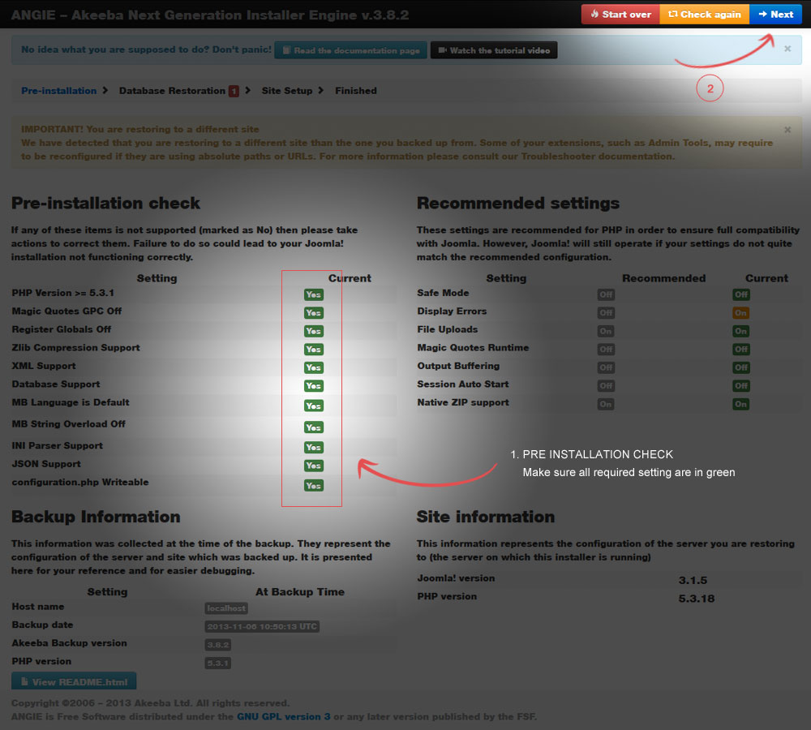
This step above is to run a series of system and server checks to ensure that ripple quickstart will be able to install, and function correctly. The left section of items should all be green and 'Yes'. If any are not (they'll be red and say "No") then you should take an action to correct them. The right section of items are not required, but are recommended to ensure that Joomla can operate smoothly.
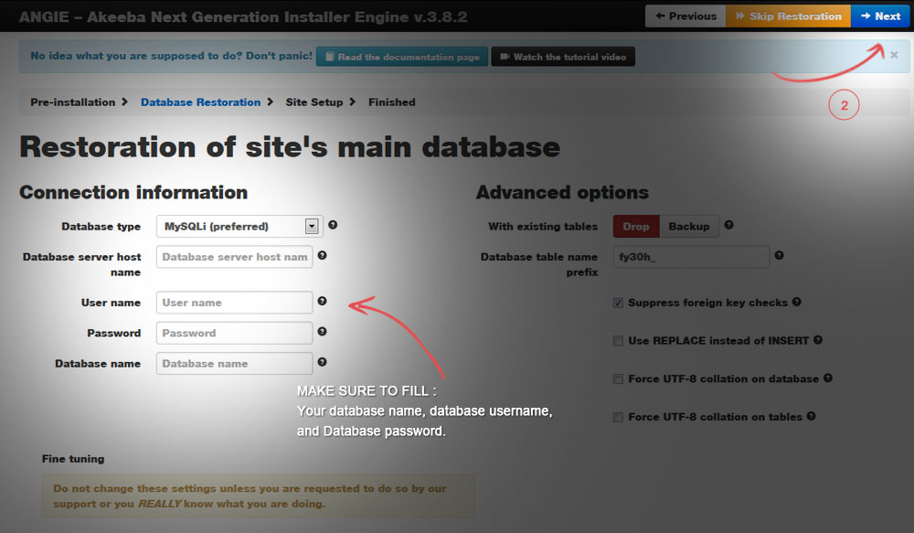
You are now configuring the database connection for your site. Here you will need to enter the Database type, Hostname, User name, Database name and the Database prefix for the MySQL database you have set up. If your settings are not correct, you might be unable to connect to the database. An additional option is to change the Table prefix. (Note: Joomla 2.5.x and above are now offers a random default prefix) This may be helpful for security purposes.
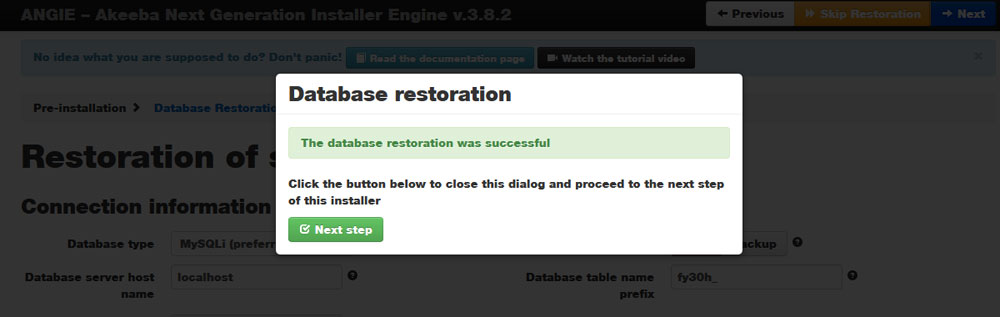
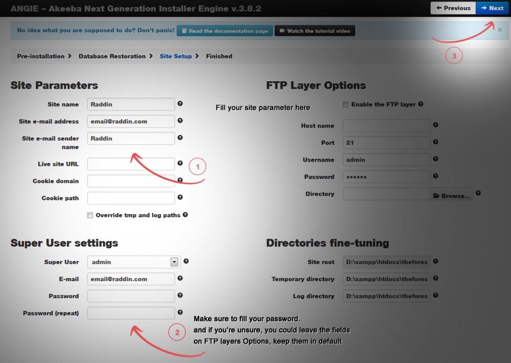
On left section of this site configuration, you must add your Site Name, Admin User Name, Admin Password, and Admin e-mail address. And on right section, FTP Configuration is unnecessary for most sites and its need is usually identified if you find you cannot upload media or images or install Extensions. The details can be added at a later time directly within the Global Configuration in the Joomla Administration pages.
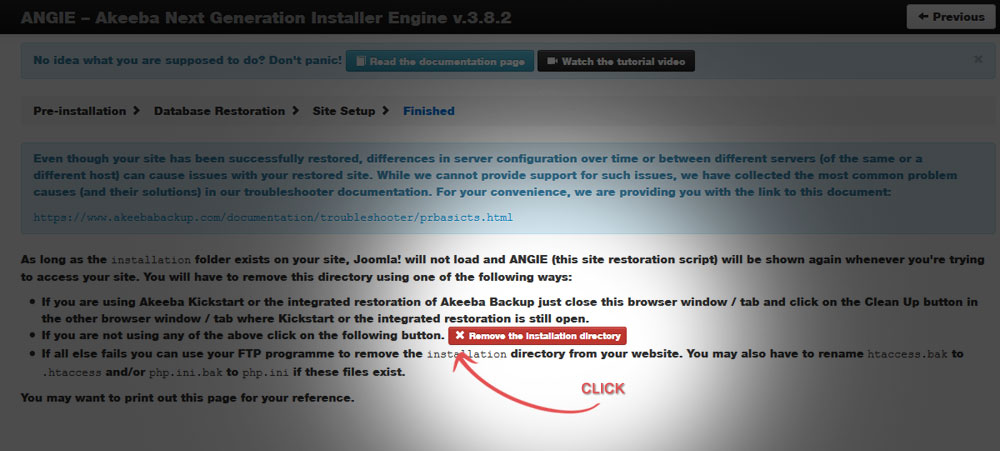
Now you are on the final step. ripple is now installed! You must now remove the installation directory, this needs to be removed for security reasons. Click the Remove Installation Directory button.
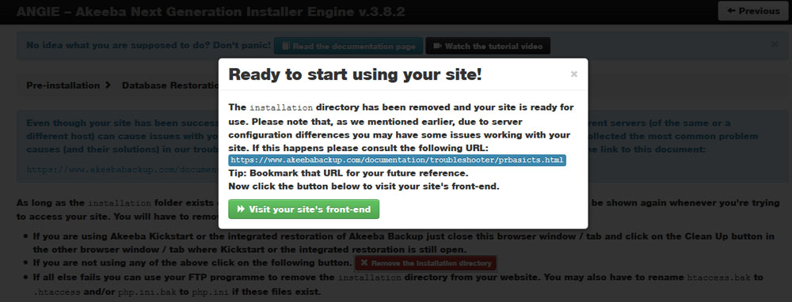
1.3 Template Installation (via Admin Panel)
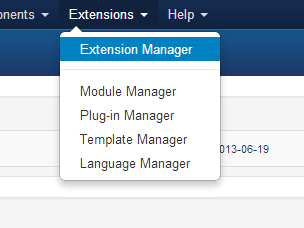
Installation ripple template as a separate install is easy and quick. Before the installation you need to download latest version of T3 System Plugin
Afterwards log into the back-end of your site (www.your-site.com/administrator/) Click on: Extensions -> Extension Manager You see the page "Extension Manager" From here you can install your Templates, Plugins, Modules, Components and Languages. You have three options:
- Upload Package File - (select a package from your PC, upload and install it)
- Install from Directory - (enter the path where the package is located on your webserver)
- Install from URL - (enter the URL to the package)
All option require the webserver to have write access to the webspace. Here, please choose the first method: Upload Package File Select the package from your PC and click the button "Upload File & Install"
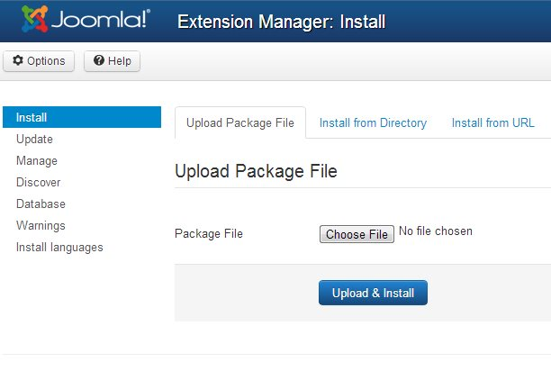Verify installation
Go from Install to Manage, set the type filter to 'template'. The installed template should appear in the list. If it does, the template is properly installed. Now you can assign one of styles to a menuitem or set the style as default. For administrator templates make sure you have two windows of the template manager. Activate the new template in one of them and reset it in the other one if something went wrong.
2. Logo Setting
You can use either image or text logo type.
- If you select to use image logo, browse to the image that is displayed as logo.
- If you select text logo, enter the text that is displayed as logo, slogan is optional, it will automatically replace the current logo.
Note that this settings can be configured in the ThemeMagic as well.
Another way to change logo is uploading your logo to images directory of ripple Template (path: ../templates/ripple/images/) And change width and height of your logo image in the file: variables.less in: templates/ripple/less.
// T3 LOGO
// --------------------------------------------------
@T3logoWidth: 184px;
@T3logoHeight: 63px;
@T3LogoImage: "../images/logo.png";
3. Template Setting
3.1. General Setting
The global settings are applied for all styles, themes and layout, no matter the settings are changed in any styles.
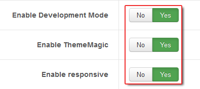- Development Mode :
This is an important option. You should clearly define the differences between enabling and disabling the option.- Enable Development Mode :
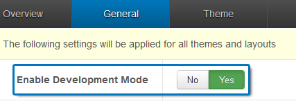
When you are developing your site, you should enable this option. Once it's turned on, your site directly runs on original files - LESS files. You can use firebug to track. After you finish your development, you should compile LESS to CSS. This option will compile LESS files to CSS files. All your changes in LESS files will be compiled to corresponding CSS files. In this mode, it is easy for you to develop your site with LESS but it will decrease your site speed so when you finish developing, turn the option off. - Disable Development Mode :
When you are not developing your site, you should disable the option. This will increase your site speed. In this mode, your site runs on CSS, not LESS. The CSS files are compiled from LESS files. Incase Development mode is off, you are allowed to enable or disable option: Optimize CSS - Disable "Optimize CSS" :
When Optimize CSS is disabled, your site normally loads CSS files (the CSS files are compiled from LESS files). - Enable "Optimize CSS" : When Optimize CSS is enabled, T3 will join and compress most possible CSS files into one or several files for site performance. The optimized css files are located in the folder defined in T3 Assets Folder option.
- Enable Development Mode :
- Enable Responsive : T3 allows you to turn on or off the feature RESPONSIVE with one click. When the option is disabled, your site is a non-responsive site. When responsive is disabled, all responsive files are not loaded (actually, they are not called, your site ignores the files).
- Enable ThemeMagic ; ThemeMagic is the visual customization. It includes multiple parameters which allow you to customize as you wish. The changes in the front-end are displayed on the right panel.
- Step 1: Enable the option "Enable ThemeMagic"
- Step 2: Click on the ThemeMagic to go to the ThemeMagic configuration panel.
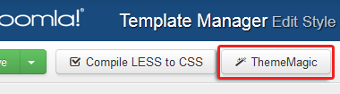
Note: This option should be enabled only when you customize your theme using ThemeMagic, after you finish your customization, you should turn it off.
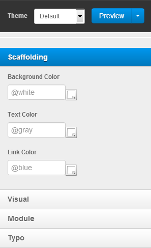
3.2. Compile LESS to CSS
The Compile LESS to CSS option is to compile the LESS that that we use to develop the webiste to CSS files that our website runs on (when development mode is off). The LESS files will be compiled to corresponding CSS files. And it will override all current CSS files.
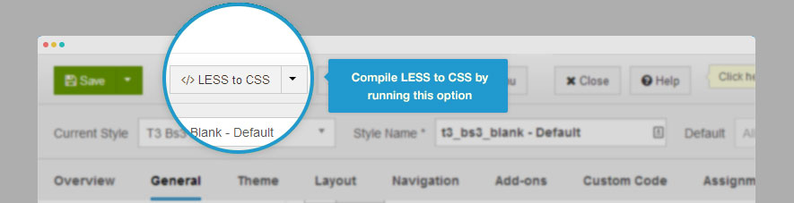3.3. Theme Settings
The Theme settings allows you to configure the Theme, Logo. The settings can be also configured in the ThemeMagic setting panel. Select a theme that you want the current style applies. Each style goes with one theme.
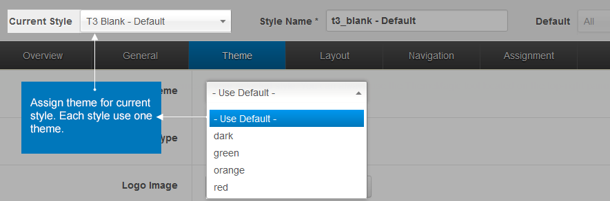Files and Folder Structure
T3 integrates Bootstrap, developed with LESS. So when you develop your site, you use the LESS files to customize. After finishing development, disabled the developement mode and then compile less to css. But, Before pressing compile less to css menu, I usually delete some css files inside of css folder and only keep extensions.css, template-ie.css and error.css
The most important folder is: less. The folder contains all LESS files that are used to develop your site, the LESS files can be compiled to CSS files.
templates/ripple/
├──less/ /* all LESS files are located here
│ ├── themes/ /* all theme folders and files are located here
│ ├── bootstrap.less
│ ├── bootstrap-responsive.less
│ ├── component.less
│ ├── core.less
│ ├── form.less
│ ├── k2.less
│ ├── layout.less
│ ├── megamenu.less
│ ├── megamenu-responsive.less
│ ├── modules.less
│ ├── navigation.less
│ ├── navigation-core.less
│ ├── navigation-responsive.less
│ ├── style.less
│ ├── style-responsive.less
│ ├── template.less
│ ├── template-responsive.less
│ ├── typo.less
│ ├── typo-responsive.less
│ ├── variable.less
│ ├── vars.less
├── css/ /* all compiled files are located here
│ ├── themes/ /* all theme folders and files are located here
│ ├── bootstrap.css
│ ├── bootstrap-responsive.css
│ ├── custom.css
│ ├── home.css
│ ├── template.css
│ ├── extensions.css /* don't delete this file
│ ├── template-ie.css /* Don't delete this file
│ ├── error.css /* Don't delete this file
│ ├── animation.css /* Don't delete this file
│ ├── ...
├── fonts/
├── js/
│ ├── jquery.easing.1.3.js
│ ├── script.js
│ ├── ...
├── tpls/ /* all layout files and block files
│ ├── block/ /* all block files here
│ │ ├── content-default.php
│ │ ├── content-homepage.php
│ │ ├── content-no-sidebar.php
│ │ ├── head.php
│ │ ├── header.php
│ │ ├── footer.php
│ │ ├── mainnav.php
│ │ ├── navhelper.php
│ │ ├── slider.php
│ │ ├── ...
│ ├── default.php
│ ├── homepage.php
│ ├── no-sidebar.php
├── images/
├── languages/
│ ├── en-GB.tpl_ripple.ini
│ ├── en-GB.tpl_ripple.sys.ini
├── templateDetail.xml /* the file is to add new group, parameters as global, parameters for position configuration, override ThemeMagic variables ...
├── templateInfo.php/
├── index.php/
└── index.html
Modules (Types, suffix and Position)
Available Modules positions
To know all module positions are used in this templates, you go to your site and call your site like this http://yourlivesite.com/?tp=1 then you'll have all information about module position that is used in this template.
Modules
- Help Sitemap FAQ
- Module Type : Menu
- Module Position : topmenu
- Search Module
- Module Type : Search Modules
- Module Position : head-search
- Cart Module
- Module Type : VirtueMart Shopping Cart
- Module Position : cart
- Homepage Slider
- Module Type : Unite Revolusioner Slider
- Module Position : slider
- Best Seller
- Module Type : VirtueMart Products
- Module Position : blog
- Banner 1
- Module Type : Custom HTML
- Module Position : banner-1
- HTML code :

- Current Issue
- Module Type : News Show Pro GK5
- Module Position : left
- Module Suffix: " colored backfaced no-padding"
- Module Mode: Standard mode
- External Files : Use default CSS = OFF
- Subscribe to Our Newsletter
- Module Type : AcyMailing Module
- Module Position : left
- Display Effect: Normal (no-effect)
- Display Mode: Tableless
- External Files : Use default CSS = OFF
- Quote of the day
- Module Type : Custom HTML
- Module Position : left
- Most Read
- Module Type : News Show Pro GK5
- Module Position : left
- Module Suffix : " listed-news"
- Notes : External files > use default css > set to No
- Tutorial Source : https://www.gavick.com/documentation/joomla-extensions/extensions-for-joomla-1-6/news-show-pro-gk4-2/
- Just Posted
- Module Type : Tabs GK5
- Module Position : content-top1
- Tabs : load modules position = tab1, tab2, tab3, tab4, tab5
- Advanced Setting : Use CSS = Forced Disabled
- Notes : this modules is a module to display some modules from various position. You just need call them from the tabs section of this tabs GK5.
- Politic, Sport, Life Style, Techno, Travelista
- Module Type : News Show Pro GK5
- Module Position : tab1, tab2, tab3, tab4, tab5
- Module Suffix : "home-news responsive"
- Notes : External files > use default css > set to No
- Video Snapshot
- Module Type : News Show Pro GK5
- Module Position : video
- Basic Setting > Module Mode : Video Gallery
- All Most Trending
- Module Type : News Show Pro GK5
- Module Position : content
- Module Suffix : "listed-news"
- Contributor
- Module Type : Custom HTML
- Module Position : sidebar-inner
- Module suffix : " no-padding"
- Banner
- Module Type : Custom HTML
- Module Position : sidebar-inner
- Module suffix : " no-padding"
- Latest Comment
- Module Type : K2 Modules
- Module Functionality : Latest Comment
- Module Position : sidebar-outer
- Find Us on Facebook
- Module Type : Acymailing
- Module data source : Facebook
- Module Position : sidebar-outer
- K2 Tags
- Module Functionality : Tag cloud
- Module Position : sidebar-outer
- Color Option
- Module Type : Menu
- Module Position : bottom1
- Our Partner
- Module Type : menu
- Module Position : bottom2
- About Joomla
- Module Type : menu
- Module Position : bottom3
- About Us
- Module Type : custom html
- Module Position : bottom4
- Who's Online
- Module Type : who's online
- Module Position : bottom4
- Get in touch
- Module Type : custom html
- Module Position : bottom5
- Google Map (On Contact Page)
- Module Type : JGMap - Google Map
- Module Position : gmaps
- Portfolio
- Module Type : Tabs GK5
- Module Position : mastcol
- Notes : You need to create and set NSP GK5 modules, and place them on position, tab1, tab2, tab3, and so on, and on tabs GK5 you need to load them
7. Third Party Extensions
The extensions like K2, Acymailing ... they are included in Quickstart package so if you install quickstart package, all the 3rd party extensions are already installed and configure as you see in our Demo. We add short documentation about those installed extensions you might need to read
7.2 K2 Component
7.2.1 About K2 Items
- Create New K2 Item
Click on the "New" button, located towards the upper right corner and marked by an orange and white "plus" sign. - Edit Existing K2 Item
Select the item you would like to edit from the item listing. - Titles and Descriptions
You can modify the title and/or description via the title text field and the description text field. - Uploading Images
- You can upload an image via the image tab located next to the content/description tab.
- Just simply select “Choose File” and find the file on your computer.
- If you would like to delete your image, check the box located at the bottom, and click the orange save button.
7.2.2 About K2 Categories
- Create New K2 Category
Click on the “New” button, located towards the upper right corner and marked by an orange and white “plus” sign. - Edit Existing K2 Category
Select the category you would like to edit from the category listing. - Titles and Descriptions in K2 Categories
You can modify the title and/or description via the title text field and the description text field. Titles and descriptions may or may not be used depending on how your site is configured. - Uploading Images
- You can upload an image via the image tab located next to the content/description tab.
- Just simply select “Choose File” and find the file on your computer.
- If you would like to delete your image, check the box located at the bottom, and click the save button.
7.2.3 Enable front-end editing for K2 items
how to allow front-end editing with K2 items. In this manual we will show you how to configure this option, but first you should be aware that K2 has its own ACL system which by default doesn’t allow even super administrators to edit K2 items from the front-end, so you’ll have to do a few steps to make sure it is activated properly.
- From the top menu (in back-end) choose Components -> K2 ->User Groups. Now you have to add a new group, for example “Super Adminer”. Inside the group’s settings you must assign (set) permissions which will allow this group’s users to access Front-end item editing etc… If you are creating the group for Administrators only then you can set all the options to ‘Yes’. Remember to assign group permissions to all K2 Categories if you want to edit all K2 items from the front-end, or just choose selected items if you want to limit the group’s category access. Now save this new group that you created.

- Now you have to assign your users who need front-end editing access to this K2 Group. From the left menu choose Users and click on the user account name you wish to give access to, then choose the recently-created group which has all permissions. You don’t have to add an avatar image or description if you don’t intend to use it, but you can if this information will be shown in the K2 items. Once done, click the Save & Close button.
- Now all you have to do is add a login link or publish a login module on your website. After logging-in you should see an extra “edit this item” option on all or selected K2 items under the title (in article view).
Now your cooperator or your client don’t need access to the back-end to post K2 items (article) to K2 from the frontend or edit available k2 items.
7.2.4 Comments System on K2
K2 has integrated (built-in) comment system is easy to use and requires little configuration. Comments feature can be enabled or disables, also can be protected by reCaptcha system.
If you want to change particular parameters within the commenting system, such a comments publications options or enable reCaptcha you have to use “Parameters” button which can be find in top-right corner. First, K2 allows comments to be published automatically by default. I would recommend you to disable that – if you don’t want to get hundreds of spam comments every day. Or you can use Enable reCaptcha: – this is an anti-spam feature. You’ll need to sign up for reCaptcha to use this.
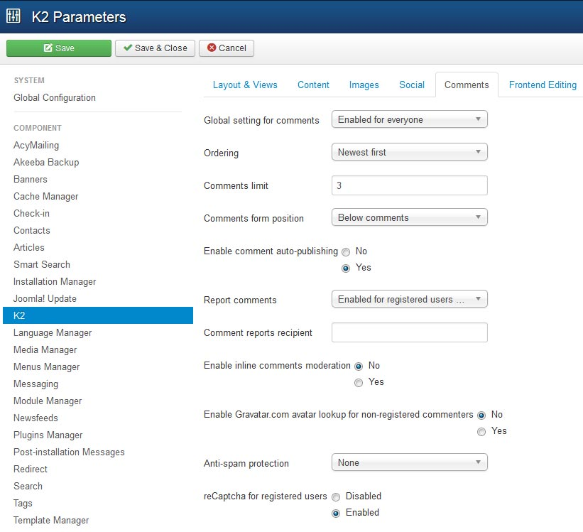
Enable/disable comments in selected category
- Open K2 Dashboard and select Categories tab.
- Open for edit your master category.
- Scroll down on your right (Parameters) and select Item view options.
- Scroll down to the option shown as follows:
To allow Comments to check Show.
To disallow Comments to check Hide.
7.3 News Show Pro GK5
News Show Pro GK5 has huge amount of options and possibilities of formatting causes NSP GK5 is a complex tool in making attractive page. Module is appropriate while preparing simple structures with an individual article, the same as, complex arrangements including few articles and a list of links. That’s why we use this extension regularly in our Joomla! templates.
7.3.1 Basic Settings
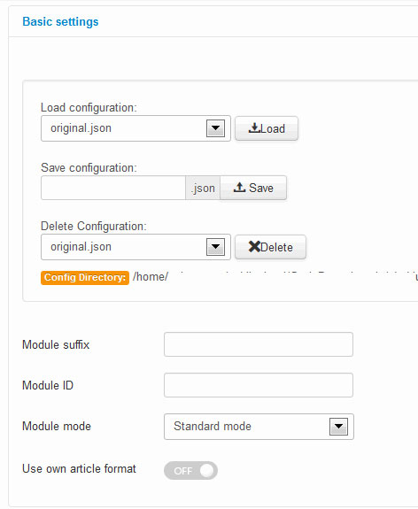
One of the most useful new features of Basic Settings is the option to save and load module configuration. This makes it possible to save the NSP configuration and, if needed, to load and restore settings. Configuration files are saved in a config catalog for the module. If saving with an already-existing file name, a number will be appended to the filename to make it unique. You can also delete configuration file, if you don’t need it anymore.
The “Module ID” option allows you to specify your own static module ID. If this option will be blank then the automatic module ID will be created.
A predefined module style: Standard mode, News Blocks, News Gallery, Portfolio, Video Gallery, Video List, Product Gallery, Title Overlay or Highlights – may be selected using the “Module mode” option.
7.3.2 NSP GK5 Content Source Setting
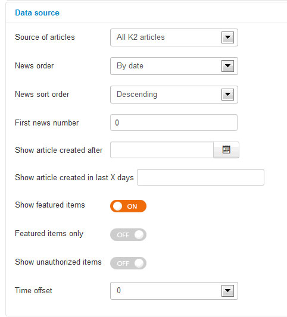
Parameters connected with the choice of type of data source used for generating module content and its filtering. Data source can be:
- Joomla! Content (categories or articles).
- K2 Content (K2 items, K2 categories, K2 Tags or K2 Authors).
- Virtuemart (products or categories)
- HikaShop (products, categories)
- Easy Blog (articles, categories, tags or authors)
- JSON file
- XML file
In the case of categories, you can choose categories from multiple choice list (use CRTL key) whereas when you want to present articles chosen.
The “News order” options are for specifying the way of sorting articles from few possibilities: date, title, ID item order, randomize or hits amount.
The “First news number” is used to show articles from a range specified, this option gives possibility to show, e.g. articles starting from fifth article (if value = 5).
The “Show article created after” allows you to show articles created after specified period of time. That’s why it’s possible to specify the oldest article/items to be presented.
The “Show article created in last X days” – is used to show articles from a specific date range (last 7 days, last 30 days or more days).
The “Show featured items” – allows you to enable showing featured articles/items or to show only them.
The “Show unauthorized items” – allows you to disable showing unauthorized items.
The “Time offset” option is useful only when you have a problem with time zone between your location and your hosting location (i.e. when new articles are showing with few hours delay).
7.3.3 Article layout settings
This section gives you access to few accordion tabs with setting for article layout.
- Article pagination: amount of pages with articles intro, amount of columns & rows and style of pagination
- Header: specify position, floating, link and width limits.
- Image: allows to set position, floating and make linkable.
- Text: allows to set position, floating, link, text width limits and option to clean HTML code).
- Information block: allows to set position, floating, link, info format based on STRINGS, date and avatar settings. Each article can display two information blocks. For each, we can specify displayed data format.
Inside Info format field you can use the following sequences:
- %AUTHOR – displays author name (we choose exact name source in “Author name” option) and avatar from Gravatar.com service (if “Show author avatar” option is on; we specify avatar size in “Avatar size” option) and author link in info block for EasyBlog.
- %CATEGORY – displays category name (we can switch on a link to a category in „Category link” option)
- %DATE – displays article’s creation or modification date (according to “Used date” option), date format is specified in “Date format” option
- %HITS – displays article amount of visits
- %COMMENTS – displays the amount of comments for specific item
The “Article layout” – group of options, there are options connected with elements padding and order of all elements like Text, Image, Info block and also Read more options. It is also possible to switch off each element
7.3.4 Thumbnail settings
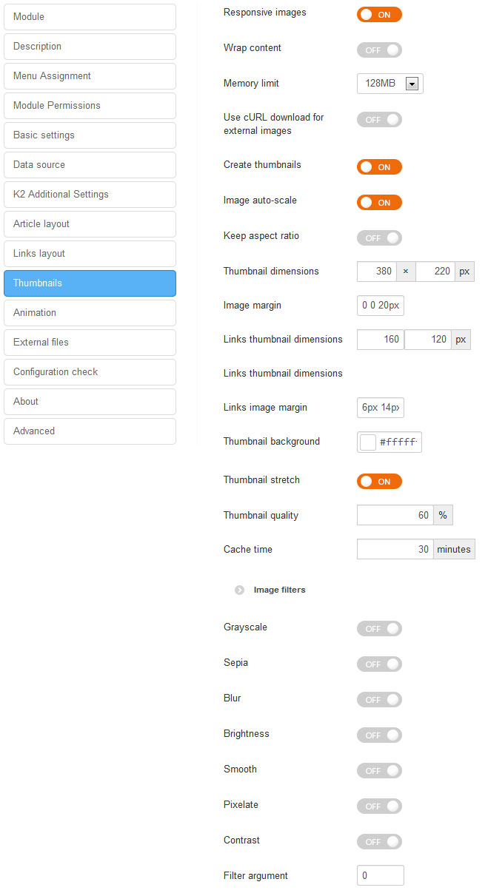
- Responsive images allows you to use all features of the responsive web design layouts, it automatically adapt your module images for mobile devices. When this option is enabled then image always scales up to the 100% width
- Wrap content enable this option if you want to achieve news layout where the image is at left side and the rest of content is at the right side, then the Image must be set in the article layout as first and should be floated to left
- Memory limit option is useful if you exceed your memory limit during module work or you set the memory limit in the other place to different value
- Use cURL download for external imagesoption is helpful if you have external images or images with absolute paths on the articles and you want to create the thumbnails from these images then you can enable this option. Please remember that you should have permissions to download these images. It will be saved on the cache directory in the downloaded/ catalog. Please remember that first load can take longer time. We don’t recommend to use this option for modules with frequently changing articles, because it can slow the page loading speed due additional data requests
- Create thumbnails option will use PHP GD library to generate thumbnails from article images.
- Image auto-scale option will automatically center image and zoom to the specific size. It works only when image stretch and keep aspect ratio options are disabled. If this option is off (disabled) then you will see Image crop settings
- Keep aspect ratio option is useful when you want to keep aspect ratio of created thumbnails. Then thumbnail width and height options mean maximal possible dimensions.
- Thumbnail dimensions option allow you to sets the dimension (width and height) on which the maximum pixel size limitation should apply to for the thumbnail. For the dimensions of your thumbnails you have to find a good compromise: thumbnails with smaller dimensions result in smaller files sizes and therefore the thumbnail page loads very fast. The drawback of small dimensions are obvious: if you pick numbers that are too small, your visitors cannot figure out what will be shown and therefore would not care to click on the thumbnail to read whole article. Set width and height for the thumbnail to the same value – to create square thumbnails.
- Image margin option allows you to sets the margin property for all directions in one declaration (Top, Right, Bottom, Left). Negative values are also allowed. The margin property is supported in all major browsers.
- Links thumbnail dimensions option allow you to sets the width and height for created thumbnails from articles images from Links section.
- Links image marginallows you define margin for images as a CSS value (i.e: 6px 5px 0px 0px)
- Thumbnail background allows you to set background color (in HEX value) under image, this might be important when created thumbnail would be smaller than defined above its size.
- Thumbnail stretchif enabled the thumbnail function stretches the thumbnail’s dimensions, both width and height, to fill the square or rectangle shape defined in the ‘Thumbnail dimensions’ setting
- Thumbnail quality allow you to choose thumbnail quality for generated images, it’s lossy compression method. Lossy means “with losses” to image quality. The more compression level you apply, the more information from photo you’ll lose. Large featureless areas (skies, desert, etc.) compress much better (smaller file) than images containing much tiny detail all over.
- Images filters filters are a powerful option that you can use to get interesting visual effects (blurring, grayscale, brightness or contrast etc.), they allow you to visually process an image on the website inside module without needing to go through PhotoShop or Gimp. You can apply an arbitrary number of filters one after the other to achieve all sorts of effects. But at the same time they might have an little impact on the performance of your site. So using them properly will have minimal impact on the speed of your site.
Extra Information
T3 Framework Documentation
Look documentation of T3 framework.
Videos of T3 framework 2.0:
- T3 Framework - Overview
- T3 Framework - ThemeMagic
- T3 Framework - Layout
- T3 Framework - Megamenu
- T3 Framework - Responsive Layout
Typography
This templates owns HTML elements styled and enhanced with extensible classes. To use those elements you could use your joomla editor and click on html icon to launch the HTML Source Editor, and please refers to this page https://demo.templateplazza.com/ripple typography to use those elements styled
To use Icon Text you need to know the cheatsheet
Source and Credits
Joomla Extentions
- T3 Framework
- K2 Component
- Tabs GK5
- News Show Pro GK5
- Akeeba Backup
- AcyMailing Starter Component
- SP Tweets
- Playlist CK
Image Source